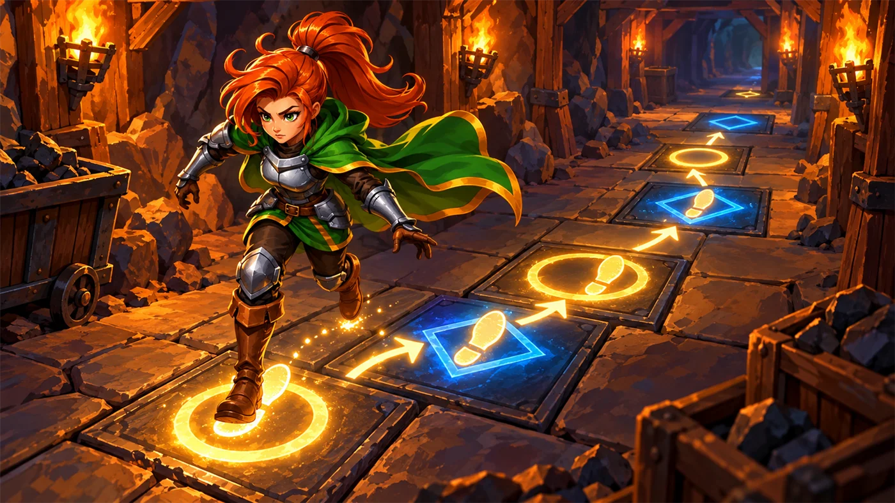

故事：矿坑外的雷区横在必经之路上，身后还跟着几位需要保护的村民。
可哪儿有雷，谁也说不准——你没法提前规划出一条安全路线。
贺舒曼在镜子里说：那就别硬规划了。走一步、看一步、随时应变——这就是模拟。
扣哒考级 · GESP PYTHON 三级 · 第 7 单元 | 符文矿坑 RUNEMARK MINE
穷举矿灯 枚举法与模拟法
Enumeration & Simulation

贺舒曼
镜中先知 · 你的向导
矿坑最深处挂着一排矿灯，整整一百盏，一盏挨着一盏。你抬头一看，
其中只有一盏是不亮的。
哪一盏坏了？工头问你。
你正想眯起眼睛仔细找，贺舒曼在镜子里说：别费劲用眼睛了。 从第一盏开始，一盏一盏地试过去——总有一盏是坏的。
她顿了顿：这个笨办法，恰恰是计算机最擅长的东西。
哪一盏坏了？工头问你。
你正想眯起眼睛仔细找，贺舒曼在镜子里说：别费劲用眼睛了。 从第一盏开始，一盏一盏地试过去——总有一盏是坏的。
她顿了顿：这个笨办法，恰恰是计算机最擅长的东西。
贺舒曼 · 镜中先知
三级最后一个单元，学两种"最实在"的算法。枚举法——把所有可能一个个试过去，简单粗暴但好用。
模拟法——照着题目的规则，一步步走一遍。
它们不需要什么聪明点子，但它们是所有算法的地基。
assets/illustrations/py-L3-07-01_brute_force_lamps.webp
【配图位】矿坑深处一整排高悬的矿灯，一眼望不到头，只有远处某一盏是暗的；一名学徒举着长杆从第一盏开始逐一点过去，灯光依次亮起，形成一条向远处延伸的光带。
0 单元导语与目标
Unit Overview
0.1 学习目标
1学完这个单元，你将能……
- 说清枚举法的思路和适用场景
- 写出"不重不漏"的枚举循环
- 用枚举法解决求因数、找特殊数等问题
- 说清模拟法的思路
- 把一段"规则描述"翻译成按步骤执行的程序
- 判断枚举的范围该从几到几
2对标 GESP 考纲（Python 三级）
- 掌握枚举法（穷举法）的基本思想，能对有限集合逐一检验
- 掌握模拟法的基本思想，能按规则的先后顺序逐步求解
- 能确定枚举的范围与边界，做到不重不漏
- 考核目标：能用枚举或模拟解决简单的实际问题
0.2 考纲对照
| 本单元小节 | 对应考纲条目 | 真题常考形式 |
|---|---|---|
| 1 枚举法 | 枚举算法的思想 | 什么情况下适合用枚举法 |
| 2 不重不漏 | 枚举的范围与顺序 | 循环的起点、终点、步长该怎么定 |
| 3 经典例题 | 用枚举解决实际问题 | 水仙花数、百钱买百鸡这类题 |
| 4 模拟法 | 按规则一步步推演 | 按题目给的规则模拟若干步后的结果 |
1 枚举法：一个个试过去
Enumeration
1.1 枚举法是什么
枚举法的思路简单到一句话：把所有可能的情况一个一个拿出来检验，找到符合条件的那个。
图 2（SVG）：枚举法——把候选一个个拿出来检验
枚举法的基本骨架
Python
for x in 所有可能的值:
if 满足题目条件(x):
处理它，或者输出它骨架就这四行 枚举 + 判断，是所有穷举题的标准结构
1.2 什么时候该想到它
打个比方：
枚举法就像一串钥匙挨个去试锁——不猜、不推理，一个一个试过去，总有一把能开。
看着笨，可它有个大优点：只要范围列全了，就一定不会漏掉答案。
而且"挨个试"这件事，计算机做得又快又不会烦——人试一百次就晕了，它试一百万次也面不改色。
看着笨，可它有个大优点：只要范围列全了，就一定不会漏掉答案。
而且"挨个试"这件事，计算机做得又快又不会烦——人试一百次就晕了，它试一百万次也面不改色。

assets/illustrations/py-L3-07-02_simulate_corridor.webp
【配图位】矿道里一条铺着编号地砖的走廊，地砖上依次标着数字与规则记号；一名矿工从第一块砖出发，每到一块砖就按砖上的规则决定下一步走向，地面上留下连续发光的脚印与转折箭头；走廊尽头立着一块写着"结果"的石牌。
什么时候该想到枚举法？
① 可能的情况数量有限，能数得清；
② 每种情况都容易验证对不对；
③ 想不出什么巧妙办法，但硬试一遍也不慢。
满足这三条，就用枚举。
② 每种情况都容易验证对不对；
③ 想不出什么巧妙办法，但硬试一遍也不慢。
满足这三条，就用枚举。

欧卡 · 撼地者
找钥匙这事我最有经验：不知道在哪把锁上，就一把一把地试。我不聪明，但我不怕烦。
计算机最厉害的地方，恰恰就是"不怕烦"。
2 不重不漏
No Missing, No Repeat
2.1 不重不漏
打个比方：
枚举要像清点仓库里的箱子——每一箱都要点到，一箱都不能漏；也不要来回重复点同一箱。
"漏"会让答案找不到，"重"会让结果算错或多算。
所以动手前先想清楚三件事：从哪里开始、到哪里结束、每次跨多少——也就是循环的起点、终点和步长。
"漏"会让答案找不到，"重"会让结果算错或多算。
所以动手前先想清楚三件事：从哪里开始、到哪里结束、每次跨多少——也就是循环的起点、终点和步长。
枚举法只有一条铁律，但它是所有错误的总源头：
铁律：
枚举的范围必须"不重不漏"——
漏了，可能找不到答案；重了，可能把同一个答案输出两遍。
判断标准很简单：你能不能一眼说清"我一共试了几种情况"？
漏了，可能找不到答案；重了，可能把同一个答案输出两遍。
判断标准很简单：你能不能一眼说清"我一共试了几种情况"？
图 4（SVG）：
range 的边界——含头不含尾，多一个少一个都会出错
求 n 的所有因数
Python
n = 12
for i in range(1, n + 1): # 从 1 试到 n（含 n）
if n % i == 0: # 能整除就是因数
print(i)OUTPUT 1 2 3 4 6 12
要点 写成 range(1, n) 就会漏掉 n 自己
要点 写成 range(1, n) 就会漏掉 n 自己
2.2 循环的起点、终点与步长
3 枚举的经典例题
Classic Examples
例题一：找水仙花数
3.1 水仙花数
所谓水仙花数，就是一个三位数，它各位数字的立方和恰好等于它自己。
比如 153，因为 1³ + 5³ + 3³ = 1 + 125 + 27 = 153。
枚举所有三位数，逐个检验
Python
for i in range(100, 1000): # 三位数的范围：100 ~ 999
a = i // 100 # 百位
b = i // 10 % 10 # 十位
c = i % 10 # 个位
if a ** 3 + b ** 3 + c ** 3 == i:
print(i)OUTPUT 153 370 371 407
3.2 怎样拆出每一位
assets/illustrations/py-L3-07-03_narcissus.webp
【配图位】矿灯照着一张石桌，桌上摆着一个刻着三位数的石牌；石牌被一把发光的凿子沿刻痕分成三块小牌（百位、十位、个位），三块小牌各自被送进旁边三台小机器里运算（求立方），结果汇总到最右边一只天平上与原数比较；天平两边恰好平衡，旁边亮起"符合"的字样，一名矿工在旁看着。
怎么从数里"拆"出每一位？
记住这两招就够用了：
某一位 = 先整除掉它右边的位，再对 10 取余。
比如 153 的十位：
个位更简单：
某一位 = 先整除掉它右边的位，再对 10 取余。
比如 153 的十位：
153 // 10 = 15，再 15 % 10 = 5。个位更简单：
153 % 10 = 3。
例题二：猜数字（缩小范围）
枚举虽然笨，但可以在枚举的过程中提前退出，省下很多次尝试。
找到第一个能被 7 整除的数就停
Python
for i in range(1, 1000):
if i % 7 == 0 and i > 100:
print(i)
break # 找到了就跳出，后面的不用再试OUTPUT 105 （找到就停，不用把 999 个数全试完）
break 的价值：
枚举最怕"情况太多"。如果题目只要求"找到任意一个"，
那找到之后就该立刻停手——这叫"提前退出"，能让程序快很多倍。
4 模拟法：照着规则走一遍
Simulation
模拟法更直白：题目怎么描述，你就怎么一步步写出来，让程序照着"演"一遍。
图 6（SVG）：模拟法——把规则一天天"演"出来
把上面的规则翻译成代码
Python
money = 10
day = 0
while money > 0:
money = money // 2 # 每天花掉一半（向下取整）
day = day + 1 # 天数加一
print(day) # 4OUTPUT 4
模拟法的两个要点：
① 状态变量——把"当前的情况"记在变量里（上面就是
② 重复的规则——每一轮都按照同样的规则更新状态，直到满足结束条件。
说白了：一个变量记状态，一个循环走过程。
① 状态变量——把"当前的情况"记在变量里（上面就是
money 和 day）；② 重复的规则——每一轮都按照同样的规则更新状态，直到满足结束条件。
说白了：一个变量记状态，一个循环走过程。

扣哒鸭 · 调试官
模拟法最考验"愿不愿意老实按题目走"。有的同学一看题就开始想"有没有公式能一步算出来"， 结果绕了半天，还不如老老实实写个循环。
题目怎么描述，你就怎么模拟——这是模拟法的唯一秘诀。
5 代码实战
Level Practice
关卡
扫雷
进入关卡 →思路：用循环不停地重复"检查自己—决定动作"，
每一轮都根据当前的状态做出反应。

assets/stages/py-L3-07-stage1_minesweeper.webp
【关卡截图位】请把《扫雷》的游戏画面截图放到此处（放入 assets/stages/ 目录，文件名为 py-L3-07-stage1_minesweeper.webp）。
重点示例：先判断状态，再决定动作
Python
healingThreshold = hero.maxHealth / 2 # 定一个"危险线"
if hero.health < healingThreshold: # 状态一：受伤太重
hero.moveXY(hero.pos.x - 10, hero.pos.y)
hero.say("Can I get a heal?")
elif coin: # 状态二：还有硬币可捡
hero.moveXY(coin.pos.x, coin.pos.y)要点 这就是一段典型的"模拟"——先看状态，再选动作；条件不同，行为就不同
和枚举的区别：
枚举是"把所有可能试一遍"，追求找遍答案；
模拟是"沿着一条时间线走一遍"，追求还原过程。
很多题目其实两者都要用——先用枚举找出候选，再用模拟验证它是否符合规则。
去扣哒世界闯这一关 →
模拟是"沿着一条时间线走一遍"，追求还原过程。
很多题目其实两者都要用——先用枚举找出候选，再用模拟验证它是否符合规则。
6 常见陷阱
Common Pitfalls

扣哒鸭 · 调试官
枚举和模拟的错，无非是"范围错了"和"步骤乱了"两类。四条，看完就能少踩很多坑。
1
枚举范围少了一个。求因数时写
range(1, n)。
扣哒鸭：
而 n 永远是 n 的因数！想要 1 到 n，必须写
range(1, n) 只到 n-1，把 n 自己漏掉了。而 n 永远是 n 的因数！想要 1 到 n，必须写
range(1, n + 1)。正确写法：
range(1, n + 1)2
忘了"提前退出"。只要找一个，却把一千个数全试完。
扣哒鸭：题目说"找出一个"，就不是"找出所有"。
找到之后立刻
找到之后立刻
break，既省时间，也避免重复输出。正确做法：找到后用
break 跳出循环3
模拟时把"先做"和"后做"的顺序搞反。比如先加天数再花钱。

扣哒鸭：模拟法最讲究步骤顺序。
题目说"每天花一半"，那就是"先花，再看还剩多少，然后天数+1"。
顺序一换，答案就可能差一天。
顺序一换，答案就可能差一天。
正确做法：严格按题目的描述顺序写语句
4
拆数字的位时用错了运算。把 153 的十位写成
153 % 10。
扣哒鸭：
口诀：要哪一位，就先整除掉它右边所有的位，再对 10 取余。
153 % 10 拿的是个位 3。
十位要先砍掉个位：153 // 10 = 15，再取余 15 % 10 = 5。口诀：要哪一位，就先整除掉它右边所有的位，再对 10 取余。
正确写法：百位
i // 100；十位 i // 10 % 10；个位 i % 107 题目练习
Practice
第 1 题改编自 2026 年 9 月 · Python 三级 第 13 题，其余为原创练习题。
改编自 2026 年 9 月 · Python 三级 · 第 13 题单选题
矿坑小卖部里，笔记本 5 元/本、笔 3 元/支、橡皮 1 元/个。用 100 元正好买 50 件文具，下面程序枚举所有购买方案，横线处应填写的条件是（ ）。
1 for notebook in range(0, 21): 2 for pen in range(0, 34): 3 for eraser in range(0, 51): 4 if ____________________: 5 print(notebook, pen, eraser)
A.notebook + pen + eraser == 50 and notebook * 5 + pen * 3 + eraser * 1 == 100
B.notebook + pen + eraser == 50
C.notebook * 5 + pen * 3 + eraser * 1 == 100
D.notebook * 5 + pen * 3 + eraser * 1 <= 100
B.notebook + pen + eraser == 50
C.notebook * 5 + pen * 3 + eraser * 1 == 100
D.notebook * 5 + pen * 3 + eraser * 1 <= 100
查看答案与详解
答案：A。枚举法的关键是把所有条件一次写全：
① 件数条件——三样加起来正好 50 件：
② 钱数条件——总价正好 100 元：
两个条件必须同时成立，所以用
B、C 错：都只写了一个条件，会把"件数够但钱不对"或"钱够但件数不对"的方案也打印出来；
D 错：用
枚举法口诀：把题目的每一句"限制"都翻译成一个条件，再用
对应小节2 不重不漏。
① 件数条件——三样加起来正好 50 件：
notebook + pen + eraser == 50；② 钱数条件——总价正好 100 元：
notebook * 5 + pen * 3 + eraser * 1 == 100；两个条件必须同时成立，所以用
and 连接，选 A。B、C 错：都只写了一个条件，会把"件数够但钱不对"或"钱够但件数不对"的方案也打印出来；
D 错：用
<= 表示"不超过 100 元"，但题目要求的是正好花完。枚举法口诀：把题目的每一句"限制"都翻译成一个条件，再用
and 串起来 —— 不重不漏。对应小节2 不重不漏。
原创练习题单选题
下列 Python 代码的功能是（ ）。
1 n = 12 2 for i in range(1, n + 1): 3 if n % i == 0: 4 print(i)
A.输出 1 到 12 的所有整数
B.输出 12 的所有因数
C.输出 12 的所有倍数
D.判断 12 是不是质数
B.输出 12 的所有因数
C.输出 12 的所有倍数
D.判断 12 是不是质数
查看答案与详解
答案：B。
输出为 1、2、3、4、6、12。
注意：范围写成
对应小节2 不重不漏。
n % i == 0 表示 i 能整除 n，
也就是 i 是 n 的因数。输出为 1、2、3、4、6、12。
注意：范围写成
range(1, n + 1) 才能包含 12 自己。对应小节2 不重不漏。
原创练习题单选题
下列 Python 代码执行后，输出的结果是（ ）。
1 money = 20 2 day = 0 3 while money > 0: 4 money = money // 2 5 day = day + 1 6 print(day)
A.3 B.4 C.5 D.6
查看答案与详解
答案：C。追踪每一轮的变化：
第 1 轮：20 → 10，day = 1
第 2 轮：10 → 5，day = 2
第 3 轮：5 → 2，day = 3
第 4 轮：2 → 1，day = 4
第 5 轮：1 → 0，day = 5，循环结束
所以答案是 5。
要点：
对应小节4 模拟法：照着规则走一遍。
第 1 轮：20 → 10，day = 1
第 2 轮：10 → 5，day = 2
第 3 轮：5 → 2，day = 3
第 4 轮：2 → 1，day = 4
第 5 轮：1 → 0，day = 5，循环结束
所以答案是 5。
要点：
// 是整除，会丢掉小数部分。对应小节4 模拟法：照着规则走一遍。
原创练习题判断题
要枚举 100 到 999 之间的所有整数，应该写
for i in range(100, 999)。（ ）查看答案与详解
答案：错误（×）。
正确写法：
对应小节2 不重不漏。
range 是含头不含尾的，
range(100, 999) 只会枚举到 998，漏掉了 999。正确写法：
range(100, 1000)。对应小节2 不重不漏。
原创练习题单选题
下列 Python 代码执行后，输出的结果是（ ）。
1 for i in range(100, 1000): 2 a = i // 100 3 b = i // 10 % 10 4 c = i % 10 5 if a ** 3 + b ** 3 + c ** 3 == i: 6 print(i, end = " ")
A.153 370 371 407
B.100 101 102 103
C.1 2 3 4
D.什么都不输出
B.100 101 102 103
C.1 2 3 4
D.什么都不输出
查看答案与详解
答案：A。这段程序枚举所有三位数，检验"各位数字立方和是否等于自身"，
也就是找水仙花数。
答案正是 153、370、371、407 这四个数。
拆位技巧：百位
对应小节3 枚举的经典例题。
答案正是 153、370、371、407 这四个数。
拆位技巧：百位
i // 100；十位 i // 10 % 10；个位 i % 10。对应小节3 枚举的经典例题。
原创练习题判断题
用枚举法解决问题时，只要把所有可能的情况都试一遍，顺序是随便的。（ ）
查看答案与详解
答案：错误（×）。枚举确实不需要复杂的技巧，但必须保证"不重不漏"：
范围不能少一个，也不能多一个；循环的起点和终点都要精确。
顺序虽然不一定要从小到大，但范围本身必须说清楚。
对应小节2 不重不漏。
顺序虽然不一定要从小到大，但范围本身必须说清楚。
对应小节2 不重不漏。
原创练习题编程题
题目要求：用枚举法找出 1 到 100 之间所有"既能被 3 整除、又能被 5 整除"的整数，
并输出它们的个数。
查看参考答案与要点
count = 0
for i in range(1, 101): # 1 到 100，含 100
if i % 3 == 0 and i % 5 == 0:
print(i)
count = count + 1
print("共", count, "个")
输出：15、30、45、60、75、90，共 6 个。
要点：
① 枚举范围是 range(1, 101)，写成 100 就会漏掉 100 本身；
② "既能…又能…"用 and 连接两个条件；
③ 顺便提一句：能同时被 3 和 5 整除，其实就是能被 15 整除。
对应小节2 不重不漏；3 枚举的经典例题。
8 本单元小结
Unit Summary
贺舒曼 · 镜中先知
三级到这里就收官了。最后送你三句话：一、枚举法：把所有可能一个个试过去——记得"不重不漏"。
二、模拟法：题目怎么描述，你就怎么一步步走。
三、想不出巧妙办法时，别硬想——先写一个"能跑通"的笨办法。
从矿坑出去，前面就是齿轮高台。那里有更复杂的东西在等你。
你在穷举矿灯前收获了什么
- 枚举法——把所有可能的情况逐一检验，找到符合条件的答案。
- 基本骨架——
for x in 所有可能: if 满足条件(x): 处理它。 - 不重不漏——
range含头不含尾；想要 1 到 n 就写range(1, n + 1)。 - 经典例题——求因数、找水仙花数；拆位用
//和%。 - 提前退出——只找一个就
break，别白跑剩下的循环。 - 模拟法——一个变量记状态，一个循环走过程，严格按题目顺序执行。
- 两者关系——枚举负责"找遍答案"，模拟负责"还原过程"。